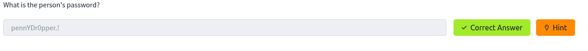

OSINT Writeup: OhSINT - TryHackMe
En el desafío OhSINT de TryHackMe, se nos proporciona una imagen (WindowsXP_1551719014755.jpg) para rastrear información sobre un usuario usando técnicas OSINT. A partir de los metadatos, identifiqué al usuario y usé X, GitHub y WordPress para responder preguntas sobre su avatar, ciudad, red WiFi, correo, destino de vacaciones y contraseña.
Metodología y Solución
Descargué la imagen con wget desde el enlace del reto. Sus propiedades: 234 kB, 1920x1080 píxeles.

Analicé los metadatos con exiftool, encontrando el copyright OWoodflint, un alias que me llevó a buscar al usuario en Google.
La búsqueda de "OWoodflint" en Google reveló su perfil de X (@OWoodflint) y su perfil de GitHub (github.com/OWoodflint), con un repositorio llamado people_finder.
Flag 1: ¿De qué es el avatar de este usuario?
En el perfil de X de @OWoodflint, confirmé que el avatar es una foto de un gato (cat). Respuesta: cat.
Flag 2: ¿En qué ciudad está esta persona?
En el repositorio GitHub people_finder, OWoodflint indica "I am from London". Respuesta: London.

Flag 3: ¿Cuál es el SSID del punto de acceso WiFi al que se conectó?
Un post en X de @OWoodflint (3 mar. 2019) menciona un BSSID (B4:5D:50:AA:86:41) con el texto "From my house I can get free wifi ;D". Usé WiGLE.net para rastrear el BSSID y obtuve el SSID: UnileverWiFi.
Flag 4: ¿En qué sitio encontraste su dirección de correo electrónico?
En el respositorio de GitHub people_finder de OWoodflint, encontré el email OWoodflint@gmail.com. Respuesta: GitHub.
Flag 5: ¿A dónde fue de vacaciones?
En el repositorio people_finder, hay un enlace a un sitio WordPress (oliverwoodflint.wordpress.com) donde OWoodflint menciona un viaje a New York.
Flag 6: ¿Cuál es la contraseña de la persona?
Inspeccioné el código fuente del sitio WordPress y encontré la contraseña expuesta: pennYDr0pper.!. Esto muestra la falta de cuidado del usuario con sus datos.
Recursos Utilizados
- Exiftool - Análisis de metadatos
- WiGLE.net - Rastreo de BSSID
- X - Perfil de OWoodflint
- GitHub - Repositorio people_finder
- WordPress - Blog de OWoodflint
- Conversor de Coordenadas - SIRGAS Chile
Notas
- Los metadatos incluían coordenadas GPS (54° 17' 41.27" N, 2° 15' 1.33" W), convertidas a decimal (54.294797, -2.250369) con un conversor. Curiosamente, coinciden con la ubicación del fondo de pantalla "Bliss" de Windows XP en Cumbria, Inglaterra, aunque no fueron relevantes para las banderas.
- El nombre del archivo (
WindowsXP_1551719014755.jpg) incluye un timestamp (1551719014755), que equivale al 4 mar. 2019, 14:23:34 UTC, indicando cuándo se creó o renombró la imagen. - La exposición de datos sensibles (BSSID, email, contraseña) por OWoodflint facilitó el OSINT.
- 2025-10-06 - Análisis completado a las 17:27 -03.
- 2025-10-06 - Publicación inicial del writeup.